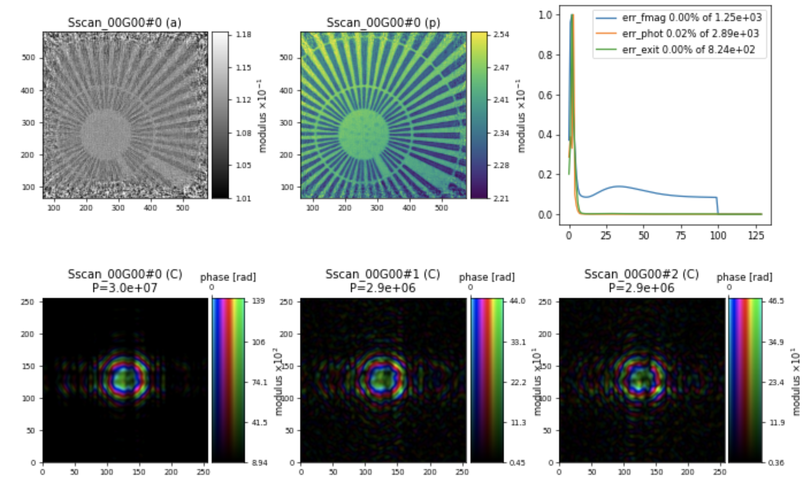

Super resolution#
Implementing the super-resolution approach with structured beams: data preparation and phase retrieval with Ptypy
Ptychography introduces a high degree of redundancy into the recorded data. Specifically, when structured beams serve as probes, the convolution between the probe and object functions brings high frequencies into the low-frequency region of the diffraction pattern. As a result, the redundancy of the ptychographic dataset enables diffraction patterns to be extrapolated beyond the aperture of the recording device, resulting in super-resolved images and enhancing the limits on the finest feature separation. This approach was published in Maiden et al. JOSA A 28, 604-612(2011). https://doi.org/10.1364/JOSAA.28.000604
The data#
Data file |
Type |
Download |
Courtesy of |
Reference |
|---|---|---|---|---|
SiemensStar.h5 |
Raw/Reconstruction |
Julio da Silva |
The data was acquired at ID16A nanoimaging beamline at the ESRF. For more information about the data and results, please take a look at J. da Silva et al., J. Synchrotron Rad 26, 1751-1762 (2019).
We can inspect how the file SiemensStar_ID16A_ESRF_farfieldptycho.zip looks like:
The file ./SiemensStar.h5 has the following relevant entries:
* data shape = (175, 256, 256)
* det_distance_mm shape = ()
* det_pixelsize_um shape = ()
* energy_keV shape = ()
* posx_um shape = (175,)
* posy_um shape = (175,)
which follows a ‘round_roi’ trajectory optimized by the traveling salesman algorithm:

import h5py, os
tutorial_data_home = "../../data/"
dataset = "SiemensStar_ID16A_ESRF_farfieldptycho/SiemensStar.h5"
path_to_data = os.path.join(tutorial_data_home, dataset)
with h5py.File(path_to_data) as f:
data = f['data'][()]
posx_um = f['posx_um'][()]
posy_um = f['posy_um'][()]
energy_keV = f['energy_eV'][()]
det_distance_m = 1.9364
det_pixelsize_um = f['det_pixelsize_um'][()]
print("The file {} has the following relevant entries: \n".format(path_to_data))
print('\n'.join('\t* {0:<30} shape = {1:}'.format(k,f[k].shape) for k in list(f)))
Data preparation#
Before any calculation with Ptypy, we need to prepare the data. We will simulate the super-resolution data by cropping the original data and padding with zeros:
pad_width=64
data_crop = data[:,pad_width:-pad_width, pad_width:-pad_width]
data_pad = np.pad(data_crop,((0,0),(pad_width,pad_width),(pad_width,pad_width)),mode='constant')
mask = np.ones_like(data_crop)
mask_pad = (np.pad(mask,((0,0),(pad_width,pad_width),(pad_width,pad_width)),mode='constant')).astype(bool)
We need to add some zeros (8 pixels here) at the borders of the mask to constrain the values there:
mask_pad[:,0:8,:]=1
mask_pad[:,:,0:8]=1
mask_pad[:,-8:,:]=1
mask_pad[:,:,-8:]=1
At this point, the data and mask should look like the example below:
We now save the data to be used in this example as SiemensStar_croppadding.h5:
io.h5write('SiemensStar_croppadding.h5',
data_pad=data_pad,
det_pixelsize_um=det_pixelsize_um,
det_distance_m=det_distance_m,
energy_keV=energy_keV,
posx_um = posx_um,
posy_um = posy_um,
mask_pad = mask_pad,
)
import numpy as np
import os
from ptypy import io
pad_width=64
data_crop = data[:,pad_width:-pad_width, pad_width:-pad_width]
data_pad = np.pad(data_crop,((0,0),(pad_width,pad_width),(pad_width,pad_width)),mode='constant')
mask = np.ones_like(data_crop)
mask_pad = (np.pad(mask,((0,0),(pad_width,pad_width),(pad_width,pad_width)),mode='constant')).astype(bool)
mask_pad[:,0:8,:]=1
mask_pad[:,:,0:8]=1
mask_pad[:,-8:,:]=1
mask_pad[:,:,-8:]=1
# It is better to remove the old hdf5 file, if present, before writing a new one
#os.remove('SiemensStar_croppadding.h5')
# Writing the file
io.h5write('SiemensStar_croppadding.h5',
data_pad=data_pad,
det_pixelsize_um=det_pixelsize_um,
det_distance_m=det_distance_m,
energy_keV=energy_keV,
posx_um = posx_um,
posy_um = posy_um,
mask_pad = mask_pad,
)
Loading the data#
We use the Hdf5Loader for reading the data into Ptypy
p.scans.scan_00.data= u.Param()
p.scans.scan_00.data.name = 'Hdf5Loader'
p.scans.scan_00.data.orientation = 4
We have to provide the key for the diffraction patterns
p.scans.scan_00.data.intensities = u.Param()
p.scans.scan_00.data.intensities.file = path_to_data
p.scans.scan_00.data.intensities.key = 'data_pad'
and the key for the masks
p.scans.scan_00.data.mask = u.Param()
p.scans.scan_00.data.mask.file = path_to_data
p.scans.scan_00.data.mask.key = 'mask_pad'
We also need to provide keys for the scan positions
p.scans.scan_00.data.positions = u.Param()
p.scans.scan_00.data.positions.file = path_to_data
p.scans.scan_00.data.positions.slow_key = "posy_um"
p.scans.scan_00.data.positions.slow_multiplier = 1e-6
p.scans.scan_00.data.positions.fast_key = "posx_um"
p.scans.scan_00.data.positions.fast_multiplier = 1e-6
The photon energy
p.scans.scan_00.data.recorded_energy = u.Param()
p.scans.scan_00.data.recorded_energy.file = path_to_data
p.scans.scan_00.data.recorded_energy.key = "energy_keV"
p.scans.scan_00.data.recorded_energy.multiplier = 1
The sample-to-detector distance
p.scans.scan_00.data.recorded_distance = u.Param()
p.scans.scan_00.data.recorded_distance.file = path_to_data
p.scans.scan_00.data.recorded_distance.key = "det_distance_m"
p.scans.scan_00.data.recorded_distance.multiplier = 1
The detector pixel size
p.scans.scan_00.data.recorded_psize = u.Param()
p.scans.scan_00.data.recorded_psize.file = path_to_data
p.scans.scan_00.data.recorded_psize.key = "det_pixelsize_um"
p.scans.scan_00.data.recorded_psize.multiplier = 1e-6
The illumination parameters
p.scans.scan_00.illumination = u.Param()
p.scans.scan_00.illumination.model = None
p.scans.scan_00.illumination.photons = None
p.scans.scan_00.illumination.aperture = u.Param()
p.scans.scan_00.illumination.aperture.form = "rect"
p.scans.scan_00.illumination.aperture.size = 120e-6
p.scans.scan_00.illumination.propagation = u.Param()
p.scans.scan_00.illumination.propagation.parallel = 6.67e-04
p.scans.scan_00.illumination.propagation.focussed = 0.1
p.scans.scan_00.illumination.model = None
p.scans.scan_00.illumination.recon = None
Mixed states parameters#
Since we will use the mixed states approach to decompose the probe, we need to set the parameters for coherence and illumination.diversity
p.scans.scan_00.coherence = u.Param()
p.scans.scan_00.coherence.num_probe_modes = 3 ## Number of probe modes
p.scans.scan_00.coherence.num_object_modes = 1 ## Number of object modes
p.scans.scan_00.illumination.diversity = u.Param()
p.scans.scan_00.illumination.diversity.power = 0.1
p.scans.scan_00.illumination.diversity.noise = (1,2)
The scan model#
For this example, we use the "Full" scan model
p.scans = u.Param()
p.scans.scan_00 = u.Param()
p.scans.scan_00.name = 'Full'
Reconstruction engine#
We use the difference map (DM) engine for the reconstruction, followed by maximum likelihood (ML). Here is the set of parameters that is the most commonly used for ID16A beamline:
p.engines.engine00 = u.Param()
p.engines.engine00.name = "DM_cupy" ## Engine name
p.engines.engine00.numiter = 100
p.engines.engine00.numiter_contiguous = 1
p.engines.engine00.probe_support = None
p.engines.engine00.probe_fourier_support = 0.2
p.engines.engine00.alpha = 1
p.engines.engine00.probe_update_start = 2
p.engines.engine00.update_object_first = True
p.engines.engine00.overlap_converge_factor = 0.03
p.engines.engine00.overlap_max_iterations = 100
p.engines.engine00.probe_inertia = 0.01
p.engines.engine00.object_inertia = 0.1
p.engines.engine00.fourier_relax_factor = 0.03
p.engines.engine00.obj_smooth_std = 5
p.engines.engine00.clip_object = (0.,1.2)
p.engines.engine01 = u.Param()
p.engines.engine01.name = 'ML_cupy'
p.engines.engine01.numiter = 30
p.engines.engine01.numiter_contiguous = 1
p.engines.engine01.ML_type = "gaussian"
p.engines.engine01.probe_support = None
p.engines.engine01.floating_intensities = True
p.engines.engine01.intensity_renormalization = 1
p.engines.engine01.smooth_gradient = 1
p.engines.engine01.scale_precond = True
p.engines.engine01.probe_update_start = 2
Resulting in a reconstruction of the Siemens star sample below: 
Note
Please note that, in the Engine parameters, we are using a value for probe_fourier_support to constrain the information in the Fourier space. We chose the value of 0.2, which may depend on the sample’s scattering length and should be adjusted accordingly. Here is the parameter:
p.engines.engine00.probe_fourier_support = 0.2
Analyzing the results#
Let us check the super-resolution diffraction pattern relative to the original dataset. For this, we need:
the original data, which was loaded in
datathe cropped and zero-padded data, which was loaded in
data_pador from the treePfrom Ptypy by doing:
diff = P.diff.view['V0000'].data
the resulting diffraction pattern from the calculation, which can be obtained using the
pod, as follows:
pod = P.pods['P0000']
df = pod.fw(pod.probe * pod.object)
Plotting
import matplotlib.pyplot as plt
diff = P.diff.views['V0000'].data
pod = P.pods['P0000']
df = pod.fw(pod.probe * pod.object)
# display the figures
fig = plt.figure(figsize=(16,8))
ax1 = fig.add_subplot(131)
ax1.imshow(np.log(np.abs(data[0])+0.02),cmap='jet')
ax1.set_title('Original data')
ax2 = fig.add_subplot(132)
ax2.imshow(np.log(np.abs(diff)+0.02),cmap='jet')
ax2.set_title('Original data with zero-padding')
ax3 = fig.add_subplot(133)
ax3.imshow(np.log(np.abs(df)+0.05),cmap='jet')
ax3.set_title('Retrieved data')
The results should be something like:
# Full code of PtyPy run script
import ptypy
from ptypy import io
from ptypy import utils as u
# This will import the HDF5Loader Class
ptypy.load_ptyscan_module('hdf5_loader')
# This will import the GPU engines
ptypy.load_gpu_engines("cupy")
# Path to the modified dataset
path_to_data = "./SiemensStar_croppadding.h5"
## General parameter container
p = u.Param()
p.verbose_level = "interactive"
p.run = "SiemensStar"
## Global parameters for I/O
p.io = u.Param()
p.io.home = "./" ## Base directory for all I/O
p.io.rfile = "reconsSR/%(run)s/%(run)s_%(engine)s.ptyr" ## Reconstruction file name (or format string)
p.io.autosave = u.Param(active=False) ## Auto-save options
p.io.interaction = u.Param(active=False)
# Live-plotting during the reconstruction
p.io.autoplot = u.Param()
p.io.autoplot.active=True
p.io.autoplot.threaded = False
p.io.autoplot.layout = "jupyter"
p.io.autoplot.interval = 1
## Scan parameters
p.scans = u.Param() ## param container for instances of scan parameters
p.scans.scan_00 = u.Param()
p.scans.scan_00.name = "Full" #"BlockFull" or "Full"
p.scans.scan_00.propagation = "farfield" ## Propagation type: "nearfield" or "farfield"
# Data parameters
p.scans.scan_00.data= u.Param() ## Data preparation parameters
p.scans.scan_00.data.name = 'Hdf5Loader'
p.scans.scan_00.data.orientation = 4
# Read diffraction data
p.scans.scan_00.data.intensities = u.Param()
p.scans.scan_00.data.intensities.file = path_to_data
p.scans.scan_00.data.intensities.key = 'data_pad'
# Read mask
p.scans.scan_00.data.mask = u.Param()
p.scans.scan_00.data.mask.file = path_to_data
p.scans.scan_00.data.mask.key = 'mask_pad'
# Read positions data
p.scans.scan_00.data.positions = u.Param()
p.scans.scan_00.data.positions.file = path_to_data
p.scans.scan_00.data.positions.slow_key = "posy_um"
p.scans.scan_00.data.positions.slow_multiplier = 1e-6
p.scans.scan_00.data.positions.fast_key = "posx_um"
p.scans.scan_00.data.positions.fast_multiplier = 1e-6
# Read meta data: photon energy
p.scans.scan_00.data.recorded_energy = u.Param()
p.scans.scan_00.data.recorded_energy.file = path_to_data
p.scans.scan_00.data.recorded_energy.key = "energy_keV"
p.scans.scan_00.data.recorded_energy.multiplier = 1
# Read metadata: detector distance
p.scans.scan_00.data.recorded_distance = u.Param()
p.scans.scan_00.data.recorded_distance.file = path_to_data
p.scans.scan_00.data.recorded_distance.key = "det_distance_m"
p.scans.scan_00.data.recorded_distance.multiplier = 1
# Read metadata: detector pixelsize
p.scans.scan_00.data.recorded_psize = u.Param()
p.scans.scan_00.data.recorded_psize.file = path_to_data
p.scans.scan_00.data.recorded_psize.key = "det_pixelsize_um"
p.scans.scan_00.data.recorded_psize.multiplier = 1e-6
# Illumination parameters
p.scans.scan_00.illumination = u.Param()
p.scans.scan_00.illumination.model = None
p.scans.scan_00.illumination.photons = None
p.scans.scan_00.illumination.aperture = u.Param()
p.scans.scan_00.illumination.aperture.form = "rect"
p.scans.scan_00.illumination.aperture.size = 120e-6
p.scans.scan_00.illumination.propagation=u.Param()
p.scans.scan_00.illumination.propagation.parallel = 6.67e-04
p.scans.scan_00.illumination.propagation.focussed = 0.1
p.scans.scan_00.illumination.model = None
p.scans.scan_00.illumination.recon = None
## Partial coherence effects
p.scans.scan_00.illumination.diversity = u.Param()
p.scans.scan_00.illumination.diversity.power = 0.1
p.scans.scan_00.illumination.diversity.noise = (1,2)
## coherence parameters
p.scans.scan_00.coherence = u.Param()
p.scans.scan_00.coherence.num_probe_modes = 3
p.scans.scan_00.coherence.num_object_modes = 1
## Object initiation parameters
p.scans.scan_00.sample= u.Param()
p.scans.scan_00.sample.model = None
p.scans.scan_00.sample.recon = None
p.scans.scan_00.sample.fill = 1.0 + 1j * 0.0
## Engines
p.engines = u.Param()
## First engine = DM
p.engines.engine00 = u.Param()
p.engines.engine00.name = "DM_cupy"
p.engines.engine00.numiter = 100
p.engines.engine00.numiter_contiguous = 1
p.engines.engine00.probe_support = None
p.engines.engine00.probe_fourier_support = 0.2 # probe support Fourier space
p.engines.engine00.alpha = 1
p.engines.engine00.probe_update_start = 2
p.engines.engine00.update_object_first = True
p.engines.engine00.overlap_converge_factor = 0.03
p.engines.engine00.overlap_max_iterations = 100
p.engines.engine00.probe_inertia = 0.01
p.engines.engine00.object_inertia = 0.1
p.engines.engine00.fourier_relax_factor = 0.03
p.engines.engine00.obj_smooth_std = 5
p.engines.engine00.clip_object = (0.,1.2)
## Second engine = ML
p.engines.engine01 = u.Param()
p.engines.engine01.name = 'ML_cupy' ## Engine name
p.engines.engine01.numiter = 30
p.engines.engine01.numiter_contiguous = 1
p.engines.engine01.ML_type = "gaussian"
p.engines.engine01.probe_support = None
p.engines.engine01.floating_intensities = True
p.engines.engine01.intensity_renormalization = 1
p.engines.engine01.smooth_gradient = 1
p.engines.engine01.scale_precond = True
p.engines.engine01.probe_update_start = 2
P = ptypy.core.Ptycho(p,level=5)
import matplotlib.pyplot as plt
diff = P.diff.views['V0000'].data
pod = P.pods['P0000']
df = pod.fw(pod.probe * pod.object)
# display the figures
fig = plt.figure(figsize=(16,8))
ax1 = fig.add_subplot(131)
ax1.imshow(np.log(np.abs(data[0])+0.02).T,cmap='jet')
ax1.set_title('Original data')
ax2 = fig.add_subplot(132)
ax2.imshow(np.log(np.abs(diff)+0.02),cmap='jet')
ax2.set_title('Original data with zero-padding')
ax3 = fig.add_subplot(133)
ax3.imshow(np.log(np.abs(df)+0.05),cmap='jet')
ax3.set_title('Retrieved data')